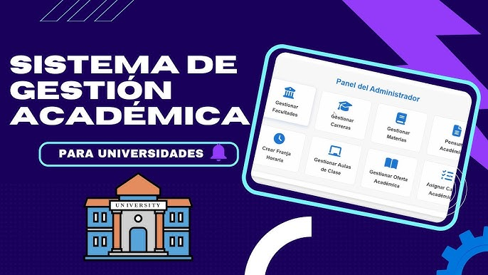

El Sistema de Gestión Académica es un proyecto orientado a mejorar la organización y administración de la información educativa dentro de una institución. Esta plataforma permite registrar estudiantes, gestionar asignaturas, controlar calificaciones y facilitar la comunicación entre docentes y alumnos. Además, proporciona un entorno seguro para almacenar información académica y generar reportes que apoyen la toma de decisiones. El sistema busca reducir el uso de documentos físicos, agilizar los procesos administrativos y mejorar la experiencia de los usuarios mediante una interfaz amigable y accesible. Gracias a las tecnologías web modernas, la plataforma puede ser utilizada desde distintos dispositivos con acceso a internet, contribuyendo a la transformación digital de los procesos educativos y al fortalecimiento de la gestión académica institucional.
